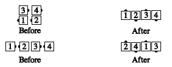

From box circulate: The leads do ½ a Box Circulate while the trailers walk forward on a slight diagonal to meet each other with their original outside hands (thought of by some as Cross Extend) and Hinge. From single eight chain thru: All Pass Thru, and the ends Quarter Right while the centers Left Touch 1/4 (this is like Touch and Weave).

© Copyright 1983, 1986-1988, 1995-2017 Bill Davis, John Sybalsky and CALLERLAB Inc., The International Association of Square Dance Callers. Permission to reprint, republish, and create derivative works without royalty is hereby granted, provided this notice appears. Publication on the Internet of derivative works without royalty is hereby granted provided this notice appears. Permission to quote parts or all of this document without royalty is hereby granted, provided this notice is included. Information contained herein shall not be changed nor revised in any derivation or publication.